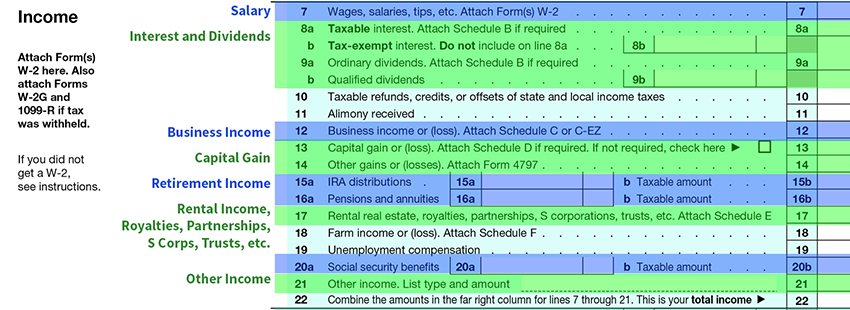

The next section of the tax return captures the gross income. Within this section, there are seven key areas in which you should focus your attention. These areas will be discussed in more detail on the following pages. The seven key areas are highlighted below on the tax return.
